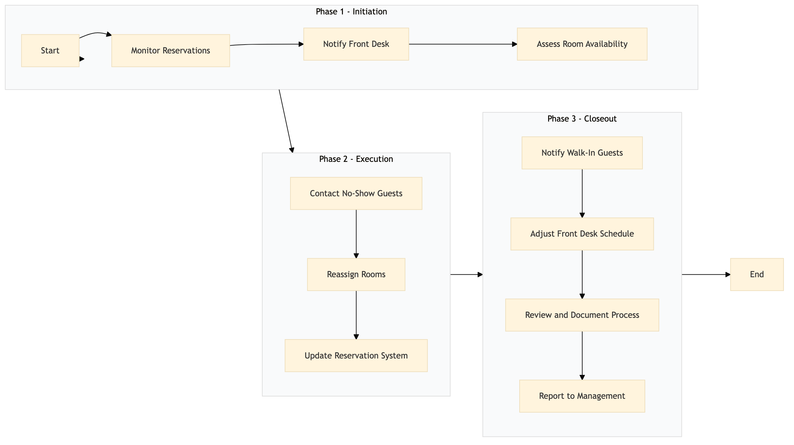

| Role | Steps |
|---|---|
| Revenue Manager | 1.1 1.2 3.1 3.4 |
| Front Desk Agent | 1.3 2.1 2.2 2.3 3.2 |
| Front Desk Manager | 3.3 |
| Step | Name | Role | System | Input | Output | KPI | Dec? | Exc? | Pain Point / Risk |
|---|---|---|---|---|---|---|---|---|---|
| 1.1 | Monitor Reservations | Revenue Manager | Oracle OPERA Cloud | Reservation data | Overbooking alert | Less than 5 min response time to overbooked status detection | N | Y | Real-time monitoring of reservations can be challenging due to system integration issues. |
| 1.2 | Notify Front Desk | Revenue Manager | Oracle OPERA Cloud | Overbooking alert | Notification to Front Desk | Less than 2 min notification time | N | Y | Communication delays between departments can affect the speed of response. |
| 1.3 | Assess Room Availability | Front Desk Agent | Oracle OPERA Cloud | Notification from Revenue Manager | Room availability report | Less than 4 min to generate report | N | Y | Accurate room availability data can be impacted by manual errors or system downtime. |
| 2.1 | Contact No-Show Guests | Front Desk Agent | Oracle OPERA Cloud | Room availability report | No-show guest contact log | Less than 30 min to contact no-show guests | Y | N | High response rates from no-show guests can delay the process. |
| 2.2 | Reassign Rooms | Front Desk Agent | Oracle OPERA Cloud | No-show guest contact log | Room reassignment plan | Less than 10 min to finalize room assignments | N | Y | Complex room configurations can complicate the reassignment process. |
| 2.3 | Update Reservation System | Front Desk Agent | Oracle OPERA Cloud | Room reassignment plan | Updated reservation data | Less than 5 min to update the system | N | Y | System errors during updates can lead to further delays. |
| 3.1 | Notify Walk-In Guests | Front Desk Agent | Oracle OPERA Cloud | Updated reservation data | Walk-in guest notification log | Less than 5 min to notify walk-in guests | N | Y | High volume of walk-ins can overwhelm the front desk. |
| 3.2 | Adjust Front Desk Schedule | Front Desk Manager | Oracle OPERA Cloud | Walk-in guest notification log | Updated staff schedule | Less than 10 min to adjust the schedule | N | Y | Balancing staffing needs with varying guest volumes can be challenging. |
| 3.3 | Review and Document Process | Revenue Manager | Oracle OPERA Cloud | Updated staff schedule | Process review report | Less than 15 min to complete the review | N | Y | Detailed documentation can be time-consuming and may require multiple reviews. |
| 3.4 | Report to Management | Revenue Manager | Oracle OPERA Cloud | Process review report | Management report | Less than 20 min to generate the report | N | Y | Generating comprehensive reports can be resource-intensive. |
The process for managing overbooking and walk management at a Marriott full-service hotel involves monitoring reservations, notifying guests of potential changes, and adjusting room assignments to ensure guest satisfaction and operational efficiency.